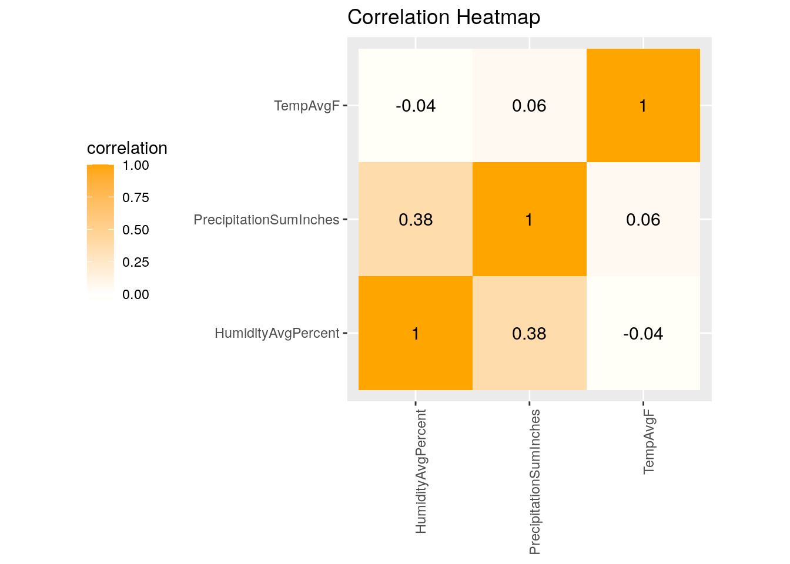
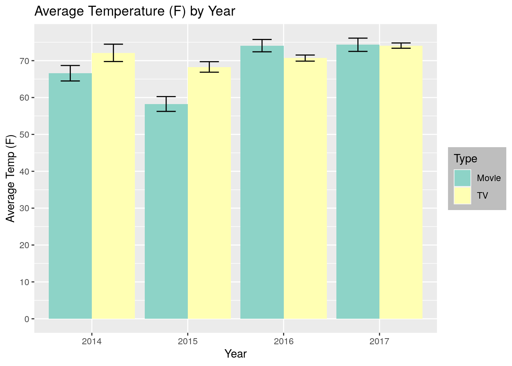
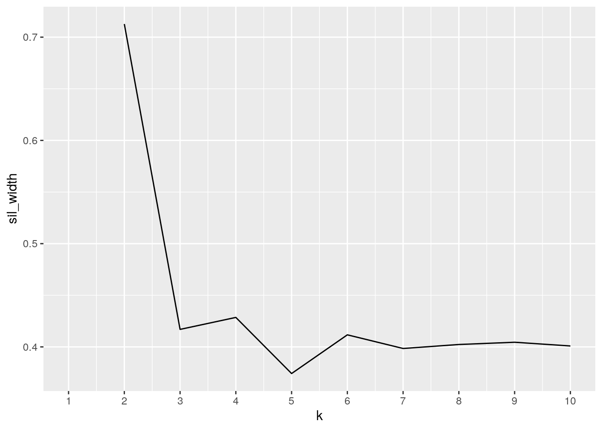
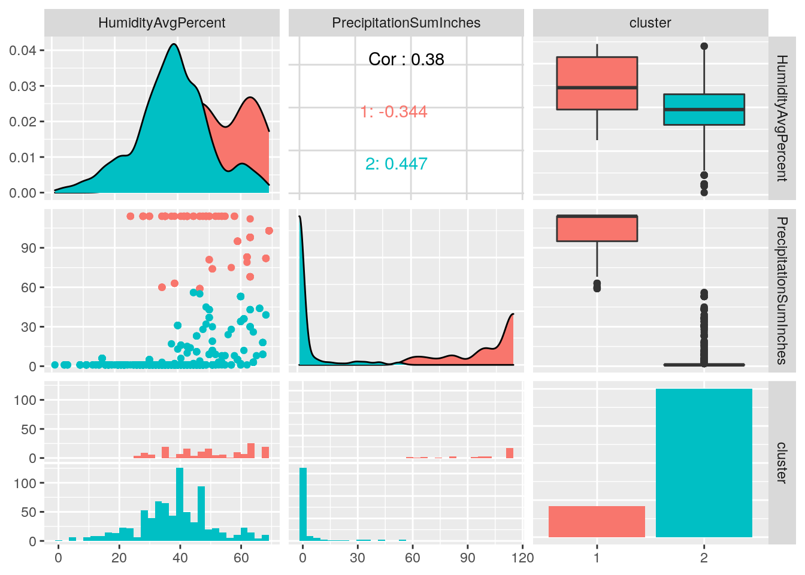

January 1, 0001
Introduction
For this project, I chose to use two datasets. The first dataset is my personal Netflix data including everything I have streamed from 2014 to present day, and the second dataset is Austin weather from 2013 to 2017. The Netflix dataset has only two variables, the TV show/movie title and the date it was streamed. I was able to download the data directly from the Netflix website while signed into my account. The Austin weather dataset has many variables, including date and the high, low and average temperatures, dew points, humidity, sea level pressure, visibility and wind, as well as precipitation and special weather events (such as thunderstorms). I found this dataset on Kaggle, because I thought it would be interesting to see the weather on days that I watched shows or movies on Netflix. I predict that there will be an association between bad weather days, such as cold temperatures or rain or storms, and the amount of shows or movies streamed that day.
Joining/Merging
library(tidyverse)
library(readxl)
NetflixViewingHistory <- read_excel("NetflixViewingHistory.xlsx")
austin_weather <- read.csv("austin_weather.csv")
NetflixViewingHistory <- NetflixViewingHistory %>% mutate(Type = ifelse(grepl("Season",
Title), "TV", "Movie"))
ProjectData <- NetflixViewingHistory %>% inner_join(austin_weather)I chose to use an inner join to combine the datasets, because I was only interested in the weather data for dates that were included in the Netflix dataset. This resulted in the loss of quite a bit of the weather dataset, but I did not feel that the data lost (days that Netlfix was not watched) was relevant in this project. However, this type of join also resulted in the loss of more recent data in the Netflix dataset, as the weather dataset only contains data until July of 2017, so data from Netflix titles watched after that was unfortunately excluded.
Wrangling
# Total number of movies and TV shows watched
ProjectData %>% group_by(Type) %>% summarize(TitlesWatched = n_distinct(Title))## # A tibble: 2 x 2
## Type TitlesWatched
## <chr> <int>
## 1 Movie 167
## 2 TV 801# number of episodes of Grey's Anatomy watched
ProjectData %>% filter(grepl("Grey", Title)) %>% summarize(Episodes_of_Greys = n_distinct(Title))## # A tibble: 1 x 1
## Episodes_of_Greys
## <int>
## 1 175# Max number of titles watched in a day
ProjectData %>% group_by(Date) %>% summarize(Titles_Watched = n_distinct(Title)) %>%
arrange(desc(Titles_Watched))## # A tibble: 288 x 2
## Date Titles_Watched
## <chr> <int>
## 1 2016-08-16 16
## 2 2015-10-10 13
## 3 2016-08-15 13
## 4 2017-07-17 11
## 5 2016-07-31 10
## 6 2016-08-01 10
## 7 2017-02-12 10
## 8 2015-03-22 9
## 9 2015-10-11 9
## 10 2016-06-08 9
## # … with 278 more rows# Temperature range
ProjectData %>% select(Date, TempHighF, TempAvgF, TempLowF) %>%
mutate(TempRangeF = TempHighF - TempLowF) %>% group_by(Date) %>%
summarize(DailyTempRange = mean(TempRangeF)) %>% arrange(desc(DailyTempRange))## # A tibble: 288 x 2
## Date DailyTempRange
## <chr> <dbl>
## 1 2014-03-02 45
## 2 2017-04-03 41
## 3 2017-05-01 40
## 4 2014-04-09 39
## 5 2016-01-28 39
## 6 2016-01-29 38
## 7 2014-12-29 37
## 8 2015-12-27 37
## 9 2014-03-18 36
## 10 2017-02-22 36
## # … with 278 more rows# mean, median, sd
ProjectData %>% group_by(Type) %>% summarize(mean_temp = mean(TempAvgF,
na.rm = T), sd_temp = sd(TempAvgF, na.rm = T), med_temp = median(TempAvgF,
na.rm = T))## # A tibble: 2 x 4
## Type mean_temp sd_temp med_temp
## <chr> <dbl> <dbl> <int>
## 1 Movie 67.2 14.3 68
## 2 TV 71.9 14.3 74ProjectData %>% group_by(Events) %>% mutate_at(c("HumidityAvgPercent"),
as.numeric) %>% summarize(mean_temp = mean(TempAvgF, na.rm = T),
sd_temp = sd(TempAvgF, na.rm = T), med_temp = median(TempAvgF,
na.rm = T), mean_humidity = mean(HumidityAvgPercent,
na.rm = T), sd_humidity = sd(HumidityAvgPercent, na.rm = T),
med_humidity = median(HumidityAvgPercent, na.rm = T)) %>%
pivot_longer(c("mean_temp", "sd_temp", "med_temp", "mean_humidity",
"sd_humidity", "med_humidity"), names_to = "SummaryStats",
values_to = "Value")## # A tibble: 42 x 3
## Events SummaryStats Value
## <fct> <chr> <dbl>
## 1 " " mean_temp 71.6
## 2 " " sd_temp 15.0
## 3 " " med_temp 74
## 4 " " mean_humidity 35.9
## 5 " " sd_humidity 9.95
## 6 " " med_humidity 37
## 7 Fog mean_temp 61.2
## 8 Fog sd_temp 11.3
## 9 Fog med_temp 67
## 10 Fog mean_humidity 46.9
## # … with 32 more rows# Average temperature grouped by Date and Type
ProjectData %>% select(Date, Type, TempAvgF) %>% group_by(Date,
Type) %>% summarize(mean_temp = mean(TempAvgF, na.rm = T)) %>%
arrange(desc(mean_temp))## # A tibble: 314 x 3
## # Groups: Date [288]
## Date Type mean_temp
## <chr> <chr> <dbl>
## 1 2016-08-10 TV 92
## 2 2016-08-12 TV 92
## 3 2016-08-09 TV 91
## 4 2017-07-21 TV 91
## 5 2017-07-25 TV 91
## 6 2017-07-26 Movie 91
## 7 2017-07-26 TV 91
## 8 2016-08-11 TV 90
## 9 2017-07-13 Movie 90
## 10 2017-07-13 TV 90
## # … with 304 more rows# Correlation
ProjectData %>% na.omit %>% mutate_all(as.numeric) %>% summarize(cor(TempAvgF,
HumidityAvgPercent))## # A tibble: 1 x 1
## `cor(TempAvgF, HumidityAvgPercent)`
## <dbl>
## 1 -0.0417ProjectDataNum <- ProjectData %>% na.omit %>% mutate_at(c("TempAvgF",
"HumidityAvgPercent", "PrecipitationSumInches"), as.numeric) %>%
select(TempAvgF, HumidityAvgPercent, PrecipitationSumInches)
cor(ProjectDataNum)## TempAvgF HumidityAvgPercent PrecipitationSumInches
## TempAvgF 1.00000000 -0.04170102 0.06031142
## HumidityAvgPercent -0.04170102 1.00000000 0.38007890
## PrecipitationSumInches 0.06031142 0.38007890 1.00000000Summary Statistics: From my summary statistics, I found several interesting patterns from my Netflix history. In total, I found that I watched 167 movies and 801 TV shows, showing that I watch significantly fewer movies than TV shows. Of the TV shows watched, 175 of them were episodes of Grey’s Anatomy, my favorite TV show. I also found that the most number of Netflix titles watched in one day was 16, which occured on 8/16/16. To further analyze the data, I was also interested in how my Netflix watching patterns may be affected by the weather. First, out of curiosity, I looked at the variation in weather by calculating the range in temperature for each date. I found the highest range to be 45 degrees, meaning the high and low temperature for the day were 45 degrees apart, which I find to be a significant difference. I also found the mean, median and standard deviation of the average temperature grouped by the type of title watched (TV show or movie) and by weather events, such as rain or thunderstorms. I also looked at the mean, median and standard deviation for humidity based on the weather events. I found that the mean temperature was slightly higher on days that I watched TV shows than on days that I watched movies. As one might expect, mean humidity seemed to be higher on days that had weather events, such as rain, though mean temperature did not seem to follow any pattern. In addition, I looked at mean temperature grouped by both date and type of title and found that on the days with highest average temperature, I generally watched TV shows rather than movies. Lastly, I looked at the correlation between three numeric variables: average temperature, average humidity, and average precipitation. I found the highest correlation to be between precipitation and temperature and a negative correlation between humidity and temperature.
Pivot explanation: After creating a table with quite a few summary statistics of the mean, median and standard deviation of the average daily temperature and humidity for each type of weather event, I used the pivot_longer() function to provide a more organized display of the data, showing the summary statistic for each event.
Visualizing
## Correlation Heatmap
tidycor <- cor(ProjectDataNum) %>% as.data.frame %>% rownames_to_column %>%
pivot_longer(-1, names_to = "name", values_to = "correlation")
head(tidycor)## # A tibble: 6 x 3
## rowname name correlation
## <chr> <chr> <dbl>
## 1 TempAvgF TempAvgF 1
## 2 TempAvgF HumidityAvgPercent -0.0417
## 3 TempAvgF PrecipitationSumInches 0.0603
## 4 HumidityAvgPercent TempAvgF -0.0417
## 5 HumidityAvgPercent HumidityAvgPercent 1
## 6 HumidityAvgPercent PrecipitationSumInches 0.380tidycor %>% ggplot(aes(rowname, name, fill = correlation)) +
geom_tile() + scale_fill_gradient2(low = "yellow", mid = "white",
high = "orange") + geom_text(aes(label = round(correlation,
2)), color = "black", size = 4) + theme(axis.text.x = element_text(angle = 90,
hjust = 1)) + coord_fixed() + ggtitle("Correlation Heatmap") +
theme(axis.title.x = element_blank(), axis.title.y = element_blank(),
legend.position = "left")
library(ggplot2)
Plot1 <- ProjectData %>% mutate(Year = case_when(grepl("2017",
Date) ~ "2017", grepl("2016", Date) ~ "2016", grepl("2015",
Date) ~ "2015", grepl("2014", Date) ~ "2014"))
ggplot(Plot1, aes(Year, TempAvgF, fill = Type)) + geom_bar(stat = "summary",
fun.y = "mean", position = "dodge") + ggtitle("Average Temperature (F) by Year") +
scale_y_continuous(breaks = seq(0, 100, 10)) + ylab("Average Temp (F)") +
scale_fill_brewer(palette = "Set3") + theme(legend.background = element_rect(fill = "grey",
size = 0.5, linetype = "solid")) + geom_errorbar(stat = "summary",
width = 0.4, position = position_dodge(0.9)) For this graph, I looked at the average temperature each year and the type of title watched (either a TV show or a movie). The graph did not produce any significant results, as much of the data looks similar from year to year. However, the graph does show that the temperature was slightly higher when I watched movies in 2014 and 2015 compared to TV shows. The graph also suggests that the average temperature was approximately the same for watching TV and movies in 2016 and 2017.
## ggplot2
Plot2 <- ProjectData %>% mutate_at(c("PrecipitationSumInches"),
as.numeric)
ggplot(Plot2, aes(Events, PrecipitationSumInches, fill = Type)) +
geom_bar(stat = "summary", fun.y = "mean", position = "dodge") +
ggtitle("Average Precip Based on Weather Event") + labs(x = "Event Type",
y = "Average Precipitation (in)") + theme(axis.text.x = element_text(angle = 45,
hjust = 1)) + scale_fill_brewer(palette = "Accent") + geom_errorbar(stat = "summary",
width = 0.2, position = position_dodge(0.9)) For this plot, I looked at the average amount of precipitation based on weather event while also looking at what type of Netflix was watched, either a movie or TV show. In the event of fog, rain and thunderstorm occuring simultaneously, the average precipitation was much higher than in other events. It also appears that it is more common to watch TV shows in inclement weather and higher precipitation than movies. However, on days with no significant weather events, the graph suggests that I was more inclined to watch a movie.
For this plot, I looked at the average amount of precipitation based on weather event while also looking at what type of Netflix was watched, either a movie or TV show. In the event of fog, rain and thunderstorm occuring simultaneously, the average precipitation was much higher than in other events. It also appears that it is more common to watch TV shows in inclement weather and higher precipitation than movies. However, on days with no significant weather events, the graph suggests that I was more inclined to watch a movie.
Dimensionality Reduction
library(cluster)
scale(ProjectDataNum)## TempAvgF HumidityAvgPercent PrecipitationSumInches
## [1,] 1.385650048 -0.72464254 2.43639816
## [2,] 1.385650048 -0.72464254 2.43639816
## [3,] 1.385650048 -0.72464254 2.43639816
## [4,] 1.385650048 -0.72464254 2.43639816
## [5,] 1.385650048 -0.72464254 2.43639816
## [6,] 1.385650048 -0.72464254 2.43639816
## [7,] 1.385650048 -0.49214205 -0.52362779
## [8,] 1.385650048 -0.49214205 -0.52362779
## [9,] 1.385650048 -0.49214205 -0.52362779
## [10,] 1.385650048 -0.49214205 -0.52362779
## [11,] 1.385650048 -0.49214205 -0.52362779
## [12,] 1.385650048 -0.49214205 -0.52362779
## [13,] 1.385650048 -0.49214205 -0.52362779
## [14,] 1.316177357 -0.72464254 -0.41884811
## [15,] 1.316177357 -0.72464254 -0.41884811
## [16,] 1.316177357 -0.72464254 -0.41884811
## [17,] 1.316177357 -0.72464254 -0.41884811
## [18,] 1.316177357 -0.72464254 -0.41884811
## [19,] 1.316177357 -0.72464254 -0.41884811
## [20,] 1.316177357 -0.72464254 -0.52362779
## [21,] 1.316177357 -0.72464254 -0.52362779
## [22,] 1.316177357 -0.72464254 -0.52362779
## [23,] 1.385650048 -0.87964287 2.43639816
## [24,] 1.385650048 -0.87964287 2.43639816
## [25,] 1.385650048 -0.87964287 2.43639816
## [26,] 1.385650048 -0.87964287 2.43639816
## [27,] 1.385650048 -0.87964287 2.43639816
## [28,] 1.385650048 -0.87964287 2.43639816
## [29,] 1.385650048 -0.87964287 2.43639816
## [30,] 1.385650048 -0.87964287 2.43639816
## [31,] 1.385650048 -0.87964287 2.43639816
## [32,] 1.316177357 -0.87964287 -0.52362779
## [33,] 1.316177357 -0.87964287 -0.52362779
## [ reached getOption("max.print") -- omitted 935 rows ]
## attr(,"scaled:center")
## TempAvgF HumidityAvgPercent PrecipitationSumInches
## 71.05475 40.35021 20.98967
## attr(,"scaled:scale")
## TempAvgF HumidityAvgPercent PrecipitationSumInches
## 14.39415 12.90320 38.17534pam_dat <- ProjectDataNum
sil_width <- vector()
for (i in 2:10) {
pam_fit <- pam(pam_dat, k = i)
sil_width[i] <- pam_fit$silinfo$avg.width
}
ggplot() + geom_line(aes(x = 1:10, y = sil_width)) + scale_x_continuous(name = "k",
breaks = 1:10)
pam1 <- ProjectDataNum %>% pam(k = 2)
pam1## Medoids:
## ID TempAvgF HumidityAvgPercent PrecipitationSumInches
## [1,] 191 75 50 114
## [2,] 160 74 39 1
## Clustering vector:
## [1] 1 1 1 1 1 1 2 2 2 2 2 2 2 2 2 2 2 2 2 2 2 2 1 1 1 1 1 1 1 1 1 2 2 2 2 2 2
## [38] 2 2 2 2 1 1 1 1 1 1 1 1 1 1 1 2 2 2 2 2 2 2 2 2 2 2 2 2 2 2 2 2 2 2 2 2 2
## [75] 2 2 2 2 2 2 2 2 2 2 2 2 2 2 2 2 2 2 2 2 2 2 2 2 2 2
## [ reached getOption("max.print") -- omitted 868 entries ]
## Objective function:
## build swap
## 20.19171 19.67895
##
## Available components:
## [1] "medoids" "id.med" "clustering" "objective" "isolation"
## [6] "clusinfo" "silinfo" "diss" "call" "data"library(GGally)
ProjectDataNum %>% mutate(cluster = as.factor(pam1$clustering)) %>%
ggpairs(columns = 2:4, aes(color = cluster)) Before starting a cluster analysis, I chose three numeric variables and scaled them. Based on the graph created of mean silhoutte width, I chose to do 2 clusters for the analysis. I then chose to use PAM clustering and found several interesting results about the two clusters. Cluster 1 (shown in red) is characterized by higher average humidity and precipitation. On the other hand, Cluster 2 (shown in blue) is characterized by drier weather, such as lower average humidity levels and lower amounts of precipitation.